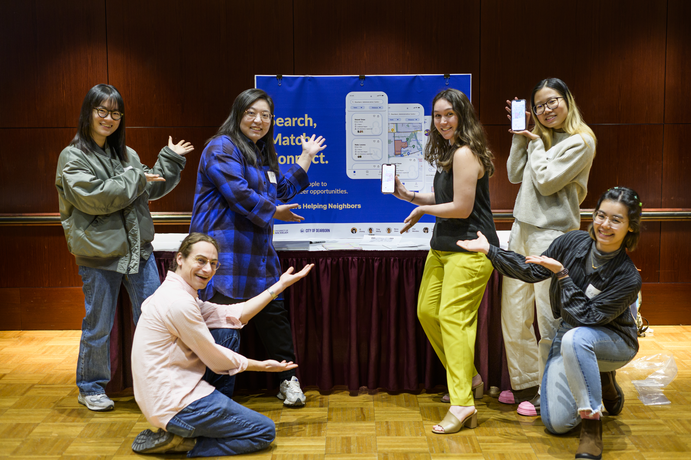

The UMSI Engaged Learning Office connects students with
opportunities to apply classroom knowledge to real-world
challenges. This site brings together guidance and resources
to help you prepare for your experience, build strong working
relationships, and navigate your project as it develops.
Whether you are preparing to meet a partner, beginning a new
project, or working through challenges during an active
experience, start with the stage that best matches where you
are now.
Start With Where You Are
Engaged learning projects develop over time. Use the stage
below that best matches your current experience to find
relevant guidance, questions, and resources.
Preparing for Your Experience
Build a strong foundation before project work
begins. Reflect on your goals and assumptions,
understand the project and community context,
assess your team's readiness, and identify what
you still need to learn.
Begin your partnership with clear expectations.
Establish team roles, plan how you will
communicate, prepare for early meetings, and work
with your partner to define the project.
Keep your project moving as circumstances change.
Manage tasks and teamwork, communicate progress,
gather and respond to feedback, conduct
responsible research, and navigate challenges.
Engaged learning gives students opportunities to apply their
skills beyond traditional classroom assignments while
learning from organizations, communities, teammates, and
real-world situations.
Why Use This Resource?
Real-world projects rarely follow a perfect plan. This site
helps you find useful guidance when you need it so you can
spend less time searching for materials and more time
learning, collaborating, and moving your work forward.
Follow a clear process:
Find guidance for preparing, beginning, and actively
managing an engaged learning experience.
Find practical support:
Access relevant templates, worksheets, checklists,
examples, and how-to guidance for common project needs.
Strengthen professional skills:
Develop communication, teamwork, project management,
feedback, and ethical decision-making skills.
Work thoughtfully with others:
Learn how to approach partners and communities with
clear expectations, respect, and an awareness of your
role in the relationship.
Reflect as you learn:
Use reflection and feedback to recognize what is
working, identify challenges, and adjust your approach.

Explore Engaged Learning Opportunities
Engaged learning at UMSI can take many forms. Students can
work with organizations and communities, participate in
collaborative projects, develop leadership skills, and apply
their learning in Michigan and around the world.
Build intercultural awareness and apply your
learning in an international setting.
About the Engaged Learning Office
The UMSI Engaged Learning Office facilitates
transformational engaged learning experiences for the
School of Information and enables innovative, sustainable,
and mutually beneficial information solutions for local
and global communities.
ELO works with organizations, communities, faculty, and
students to support experiences that connect academic
learning with real-world needs.